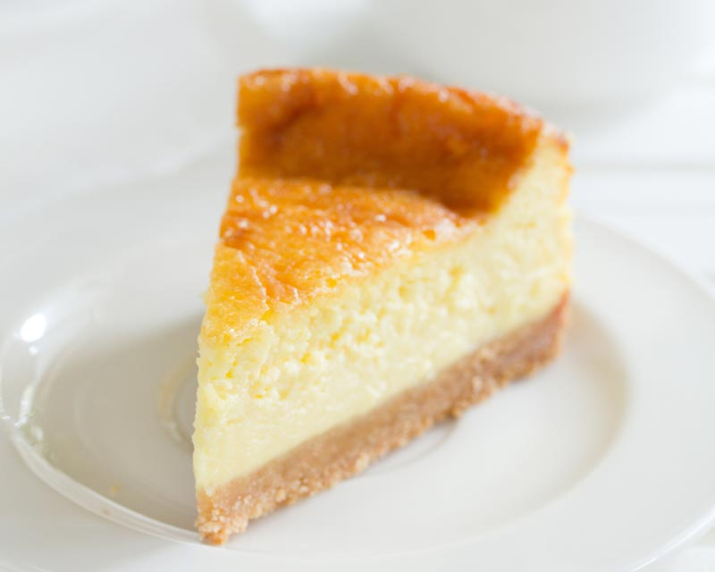

Separa 6 claras de las yemas en diferentes bowls. Bate 6 claras
a punto de turrón con una batidora eléctrica (es muy importante
que queden a punto de turrón antes de agregar los demás
ingredientes), una vez que estén agrega el azúcar poco a poco
sin dejar de batir.
Bate las 6 yemas con un tenedor y añádelas a la mezcla. Agrega
el harina, la leche y la vainilla. Bate hasta que quede una
mezcla homogénea.
Enmantequilla y enharina el molde que vas a utilizar. Vacía la
mezcla del pastel en el molde para que quede 3/4 lleno. Mételo
al horno de 30 a 40 minutos (sin abrir el horno, siempre estar
vigilándolo) o hasta que al meter un palillo este salga limpio.
Ingredientes
1 Taza de Cajeta
2 Latas de Leche Evaporada (1 1/2 tazas)
8 Huevos
1 Taza de Aceite de maíz
1 Caja de Harina para preparar pastel sabor chocolate (432 g)
1 Lata de Leche Condensada
3 cucharaditas de esencia de vainilla
Preparacion
Precalentar el horno a 180 grados C
Para el pastel. Engrasa y enharina un molde para pastel, cubre
el fondo y las paredes con la cajeta. Licúa 1 lata de Leche
Evaporada CARNATION® CLAVEL® con los 3 huevos, el aceite y la
harina sabor chocolate hasta integrar por completo.
Para el flan, licúa la Leche Condensada LA LECHERA® con 1 lata
de Leche Evaporada CARNATION® CLAVEL®, los 5 huevos y la esencia
de vainilla. Vacía en el molde la mezcla del pastel de chocolate
y encima, con ayuda de una cuchara vierte poco a poco la mezcla
del flan. Cubre el molde con papel aluminio y hornea a 180 °C a
baño María durante 1 ½ horas.
Deja enfriar, desmolda y refrigera durante 30 minutos. Decora y
sirve al gusto.
Ingredientes
1 paquete de galletas María molidas
Latas de Leche Evaporada (1 1/2 tazas)
5 Huevos
1 paquete de queso crema
1 Lata de Leche Condensada
1 cucharadita de esencia de vainilla
1 barra de mantequilla o margarina
Preparacion
Precalentar el horno a 180 grados C
En un recipiente coloca las galletas Marías con la barra de
mantequilla y mezcla hasta formar una pasta suave. Colócala en
tu molde para pay y espárcela con tus dedos hasta que el fondo y
bordes de este queden completamente cubiertos.
En la licuadora o en un bol, coloca el queso crema, los huevos,
la lechera, la vainilla y la leche evaporada y mezcla hasta que
todo se integre.
Vacía sobre la base de galleta y coloca el recipiente en el
horno a 180º por 45 minutos, aproximadamente. Una vez
transcurrido el tiempo retira del horno, espera a que se enfríe
un poco y sirve.

Ingredientes
2 1/2 tazas de harina
100 gr de mantequilla
2 Huevos
1 cucharatida de polvo para hornear
1 cucharadita de esencia de vainilla
1 taza de azucar
Preparacion
Para empezar con la preparación de las galletas caseras de
mantequilla, coge un recipiente y mezcla la mantequilla con el
azúcar. Este proceso lo puedes hacer a mano con una espátula,
verás como la mantequilla se va aclarando, formando una masa muy
cremosa.
El siguiente paso es añadir los huevos y la vainilla. Continúa
removiendo con la espátula hasta conseguir que estos se integren
por completo. Si se te hace muy complicado amasar las galletas
de mantequilla a mano, puedes usar una batidora eléctrica, pero
no deberías tener problemas.
Deja el bowl con la masa a un lado y aparte, cierne la harina
junto con el polvo de hornear. Este paso es muy importante
porque esto es lo que nos asegurará que no queden grumos y
obtengamos una masa suave y homogénea.
Ve añadiendo poco a poco la harina en la preparación y revuelve
hasta que se integre todo por completo. El siguiente paso será
envolverla en papel transparente y guardarla en la nevera
durante una media hora aproximadamente. Lo ideal es formar una
bola o varias pequeñas.
Pasado este tiempo, ya podrás sacar la masa de la nevera. Para
trabajar, esparce un poco de harina sobre una superficie plana y
extiéndela con ayuda de un rodillo. Haz las galletas del grosor
que quieras y córtalas con ayuda de un cortador de galletas con
la forma que más te guste o con un vaso para hacer galletas de
mantequilla redondas. Ve precalentando el horno a 180 °C.
Coloca las galletas sobre una bandeja de horno forrada con papel
vegetal y hornéalas durante 15 minutos, o hasta que estén
doradas. Las galletas de mantequilla se hacen muy rápido, por lo
que deberás vigilar el horno por si requieren de menos tiempo.
Si tu horno tiene la opción, coloca calor arriba y abajo.
Cuando estén listas, saca la bandeja del horno. Notarás que las
galletas están un poco blandas, no te preocupes porque es
normal. Lo mejor es dejarlas enfriar sobre una rejilla, ya verás
en cuanto se enfrían se tornan crujientes. Eso sí, ten cuidado
de no quemarte, así que usa siempre una espátula para sacar las
galletas recién hechas de la bandeja.
Ingredientes
3/4 de taza de azucar
1 1/2 tazas de harina
1 barra y media de mantequilla o margarina
3 huevos
1 cucharadita de esencia de vainilla
2 cucharaditas de polvo para hornear
Preparacion
Precalentar el horno a 180 grados c
Cremar la mantequilla a temperatura ambiente por 7 minutos hasta
que se torne blanca, agregar la azucar y la vainilla, integrar
bien y agregar los huevos uno a uno.
Tamizar harina y polvo para hornear, ya sea en el mismo bol o en
otro aparte, seguir batiendo hasta integrar bien los
ingredientes.
Colocar los capacillos para cupcakes en el molde, de esta
cantidad de mezcla salen 12 cupcakes, asi que dependera de tu
molde (si es de 6 o 12) sobre las horneadas que haras ya sean 1
o dos. Vertir la mezcla en cada espacio y hornear por 30 min a
180 grados (el tiempo puede variar dependiendo el horno). Desmoldar y decorar al gusto.
Ingredientes
3 platanos maduros
2 tazas de harina (300gr)
1 barra de mantequilla o margarina
1 cucharadita de polvo para hornear
1/2 cucharadita de esencia de vainilla
1 cucharadita de bicarbonato de sodio
1/2 taza de azucar
2 huevos
1 cucharada de leche
1 taza de nueces troceadas (opcional)
Preparacion
Precalentar el horno a 180 grados c
En un recipiente batir la mantequilla a temperatura ambiente,
mientras en otro machacas los platanos.
Mezclar la mantequilla, el platano machacado, los 2 huevos, el
azucar e integrar muy bien y agregar la vainilla y la leche.
Agregar los ingredientes secos, la harina, polvo para hornear,
bicarbonato, y las nueces troceadas, integrar muy bien.
Vertir la mezcla en un molde engrasado y enharinado, hornear por
40 min a 180 grados (el tiempo dependera del horno). Dejar
enfriar, desmoldar y servir.
Ingredientes
2 tazas de zanahoria rallada
2 tazas de harina (300gr)
1 taza de aceite
1/2 cucharadita de polvo para hornear
1/2 cucharadita de esencia de vainilla
1/4 de cucharadita de canela (o al gusto)
1 taza de azucar
4 huevos
1 taza de nueces troceadas (opcional)
Preparacion
Precalentar el horno a 180 grados c
En un recipiente mezclar los ingredientes secos, harina, polvo
para hornear, azucar, canela y la nuez. Integrar todo muy bien.
Agregar los ingredientes humedos, aceite, vainilla, huevos y
zanahoria. Batir hasta integrar bien.
Vertir la mezcla en un molde previamente engrasado y hornear a
200 grados por 45 min (dependera del horno). Esperar a que se
enfrie, desmoldar y servir.
Ingredientes
1 taza de mantequilla sin sal
1 taza de azucar
1 taza de azucar morena
2 cucharaditas de sencia de vainilla
2 huevos
1/2 cucharadita de sal
2 1/2 tazas de harina
1/2 cucharadita de polvo para hornear
1 1/2 tazas de chispas de chocolate
Preparacion
Precalentar el horno a 180 grados c
Colocar la mantequilla en un recipiente amplio, con una batidora
eléctrica empieza a batirla e incorpora las azucares y vainilla.
Sigue batiendo hasta lograr una crema.
Añade uno a uno los huevos sin dejar de batir. Y con ayuda de un
cernidor incorpora a la crema cerniendo; harina, sal y polvo de
hornear. Con una espátula recoge todos los bordes.
Júntalo bien formando una sola masa. Coloca las chispas de
chocolate y con la misma espátula incorpóralas a la masa.
Refrigera por 30 minutos.
Forma bolitas con la masa refrigerada y colócalas sobre una lata
previamente engrasada y enharinada separadas aproximadamente 5
cm de cada una. Hornéalas durante 14 minutos o hasta que la base
este dorada.